Overview
Welcome to HDAT9700 Statistical Modelling II - Directed Acyclic Graphs (DAGs)!
In this chapter you will learn how to represent assumptions about casual mechanisms using a special type of graph: a Directed Acyclic Graph, or DAG. DAGs are useful because they allow us to formalise our assumptions and can help inform variable selection for causal models.
In this chapter you will learn how to:
- Represent common causal structures using a DAG
- Identify adjustment variables using a DAG
Prereadings
The pre-reading for this chapter is a tweetorial by epidemiologist Ellie Murray from Boston University School of Public Health.
The tweetorial focuses on “the importance of being clear about your question & using that to drive your methods”. Find it here.
Ellie’s tweetorial was prompted by a disparaging tweet about this study, which explores the relationship between frozen shoulder and the risk of cancer. The disparaging tweet criticised the study for failing to adjust for confounding. In her tweetorial, Ellie explains that this was a descriptive study, not one addressing a causal question and that in fact adjusting for confounding may well have led to the wrong answer to the question at hand.
This pre-reading should help you understand that we always need to be clear about the purpose of our models, as our purpose dictates how we specify the model and what variables we should control for.
Core readings:
Additional resources:
dagitty.net: A great website explaining DAGs and related topics, with built-in applets to test your knowledge
An excellent YouTube video series on Causality and DAGs presented by Assistant Professor Nick Huntington-Klein from Seattle University. This is a series of 14 videos that starts from the very basics of causal thinking with DAGs.
The Causal Inference Podcast, hosted by Ellie Murray and Lucy D’Agostino McGowan. Check out the first episode: Talking target trials with Miguel Hernán
Three tasks of data science
The statistical analyses you will perform as Health Data Scientists can be categorised according to three broad tasks of data science.
- Description
- Prediction
- Causal inference
Description involves using statistical models to summarise the relationship between variables. There is no reliance on any underlying causal theory.
Prediction involves using statistical models to predict new or future outcomes (Y) given a set of input values or variables (X).
Causal inference involves estimating the causal effect of an exposure, treatment or intervention. Answering causal questions boils down to comparing outcomes under two or more scenarios, for example, “Would this patient have better chances of survival given treatment A or Treatment B”?
The table below (from Hernán et al 2019) provides examples of the types of questions, data and analysis methods associated with the tasks of description, prediction and causal inference.

Three tasks of data science (from Hernán et al 2019)
“Explanation” or “Causal Inference”?
Causal inference tasks are often referred to as “Explanation” (see the video To Explain or to Predict? for example). However, Hernán et al (2019) emphasise that quantifying causal effects doesn’t necessarily equate to explaining causal mechanisms. This is a fair point: knowing that smoking causes cancer is different to knowing which chemicals are carcinogenic, for example.
Variable selection
As you learned from this chapter’s pre-reading, how we go about choosing the variables to include in the model depend crucially on what we are trying to achieve.
For predictive models, the goal is to build a model that accurately predicts the outcome of interest with high sensitivity and specificity, and performs well on new data. In terms of variable selection, the primary consideration is choosing variables that help to achieve this goal (although you would also consider practical things like what variables will be available at the time of prediction). Variable selection could be based on univariate analysis, selecting variables that show a strong association with the outcome, or a selection algorithm like forward, backward or stepwise selection. Many machine learning algorithms will will automatically select (or appropriately weight) the most predictive variables from the available set of covariates. The covariates in a predictive model all play the same role so we can refer to them collectively as predictors.
For causal models, the goal is to estimate the effect of a given intervention or treatment on a predefined outcome of interest. Really, the only parameter of interest from our causal model is the estimate for that intervention or treatment. In this context, other variables (that may or may not be available in your dataset) have different roles and different names which you might already have come across: confounders, mediators and colliders. Importantly, this means that just because a variable is correlated with the outcome of interest, that doesn’t necessarily mean it is a good candidate to include in the model. In order to understand what variables to include in a causal model, we need to recognise these different types of variables, and understand the role they play in the causal relationship of interest.
Distinguishing between confounders, mediators, colliders and other types of variables relies on expert knowledge about the subject matter in question. There is no algorithm or automated selection procedure that can replace this knowledge. Directed Acyclic Graphs, the main topic of this chapter, are an important tool that help us to formalise and graphically represent expert knowledge, and in doing so can help us to select the variables that should be included in a causal model.
DAGs
Directed Acyclic Graphs (DAGs)
DAGs are graphical tools used to represent the assumptions about causal relationships for a given problem. Representing these assumptions using a graph is an important approach because it allows you to
- Express expert knowledge explicitly
- Facilitate discussions about variable selection with co-authors
- Communicate your assumptions to readers
What is a DAG
DAGs are diagrams comprising nodes (circles or squares) connected by edges (arrows). These diagrams represent assumptions about the causal relationships of interest. The nodes in a DAG represent observed or unobserved variables or constructs while the arrows indicate the direction of the causal relationship between variables.
In this simple DAG, the arrow points from X to Y, representing the asumption that X causes Y.
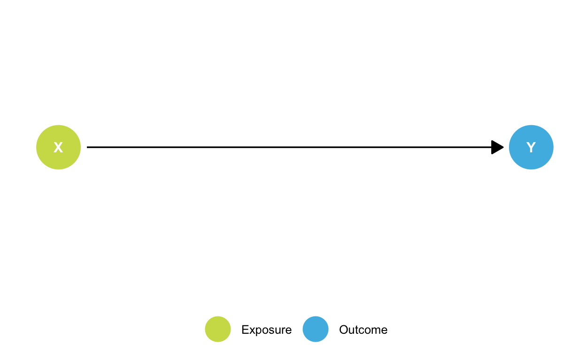
The absense of an arrow between two variables represents the assumption that neither neither variable is causing or caused by the other. In the next DAG, Z causes X and Z causes Y, but X and Y are causally unrelated (there is no arrow pointing from X to Y or from Y to X).
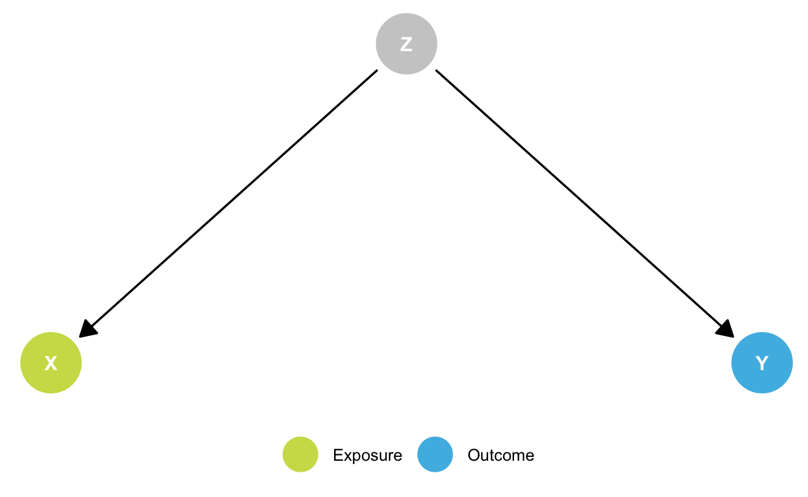
As we will discuss at length, the absence of an arrow between two nodes on a DAG, doesn’t mean that the variables are uncorrelated in an observational dataset. What if our DAG above represented sunshine, icecream sales and sunburn?
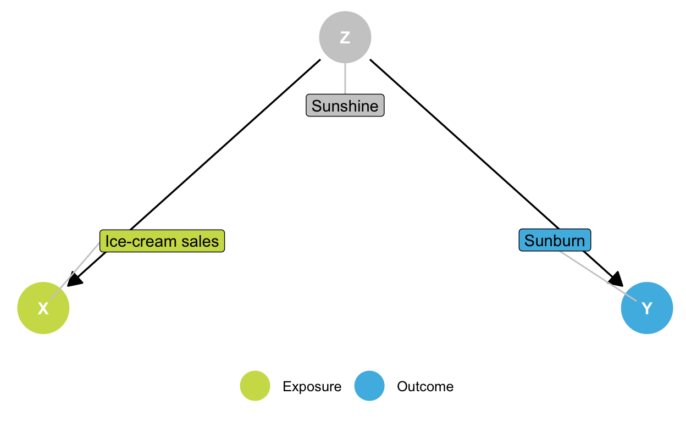
We know that icecream sales definitely don’t cause sunburn, but you wouldn’t be surprised to find an association between ice-cream sales and incidence of sunburn (a case of correlation not implying causation!). This is a classic example of confounding bias. The relationship between ice-cream sales and sunburn is confounded by sunshine, inducing an association between the two variables, even though there is no causal relationship.
By using expert knowledge to express our qualitative understanding of causal relationships of interest, DAGs help us to distinguish between association and causation.
Properties of DAGS
There are some formal requirements for a causal DAG. As indicated by the name, DAGs should be directed and acyclic.
Directed The relationship between nodes are directional. The arrows indicate the direction of causality.
Acyclic DAGs must not have cycles between the nodes, i.e. a variable should not “cause” itself, either directly or through other variables. You can spot a cyclic relationship if it is possible to start at one node and follow the directional arrows to arrive back at the same node.
Below is an example of a cyclic graph. The logic here is tempting: good health will improve educational outcomes, high levels of education will increase income and higher income can improve health. However this results in a cyclic graph: it is posible to start at any node and follow the directional arrows to return to that node, for example the path health \(\rightarrow\) education \(\rightarrow\) income \(\rightarrow\) health.
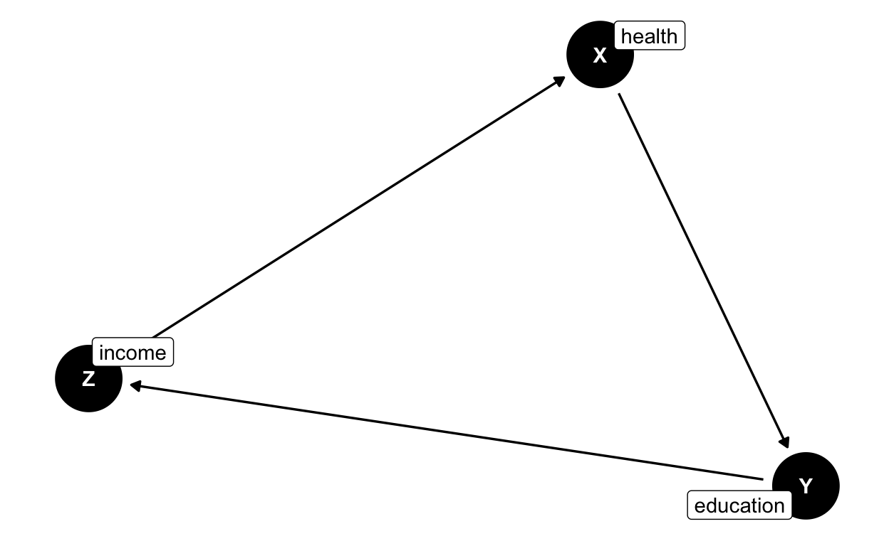
This would suggest that health status causes health status. Because this graph is cyclic and not acyclic, it does not meet the formal requirements for a DAG. Often, we can untangle cyclic relationships by considering the timing of causes and effects. For example, the relationship between health, education and income could be re-expressed more meaningfully by considering health status at different points in time, as represented below.
This is a now valid DAG because it is directional and acyclic. Note the DAG above follows the convention that time moves from left to right.
The causal Markov assumption
A further property of a causal DAG is the causal Markov assumption. Although this sounds a bit scary, it is quite simple (cf Hernán and Robins 2020 Chapter 6 Technical Point 6.1 for a formal definition). It means that a common cause of any pair of variables on a DAG should also be included in the DAG.
As an example, let’s say we are interested in the causal relationship between between aspirin and pulmonary embolism, in a setting where aspirin is more often prescribed to patients with high blood pressure. In this case, high blood pressure is a common cause of both aspirin usage and pulmonary embolism: patients with high blood pressure are more likely to be taking aspirin and high blood pressure increases the risk of a pulmonary embolism. To satisfy the causal Markov assumption, blood pressure should be included in the DAG (and controlled for in any corresponding analysis).
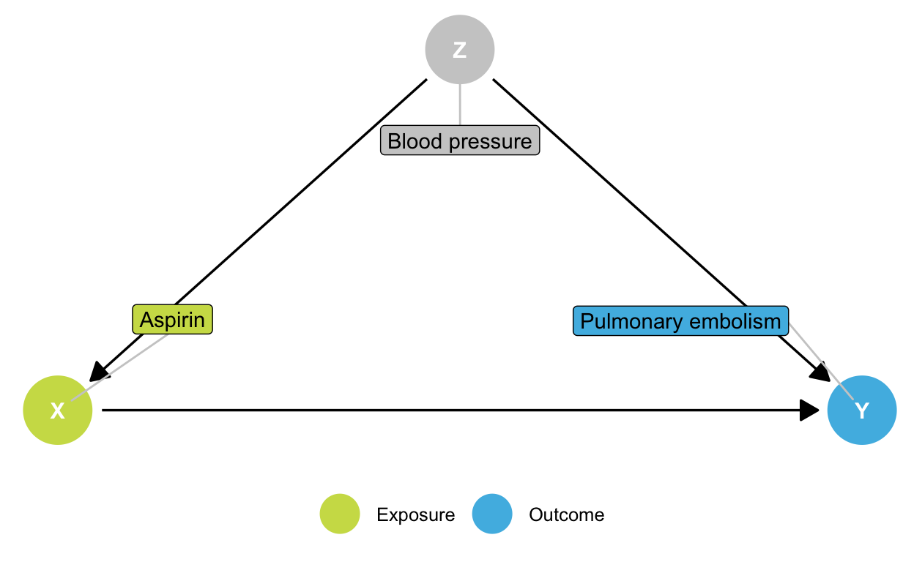
Now, imagine a different setting where aspirin has been administered as the intervention in a randomised control trial. In this case, patients are randomly assigned, so there is no causal relationship between blood pressure and taking aspirin. Blood pressure still increases the risk of having a pulmonary embolism, but it is no longer a common cause of taking aspirin and having a pulmonary embolism so it is not necessary to include on the DAG.
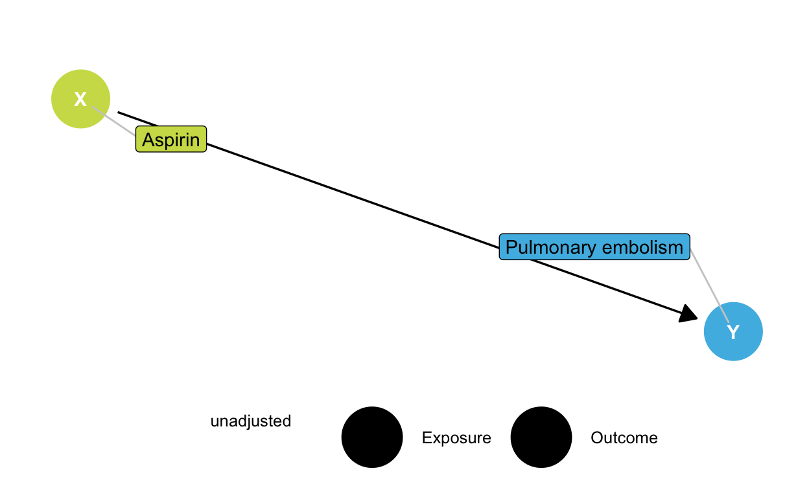
Other terminology
Consider the DAG below which an investigator might use when postulating the causal relationship between exercise and melanoma. We will use this DAG to explain some additional useful terminology.
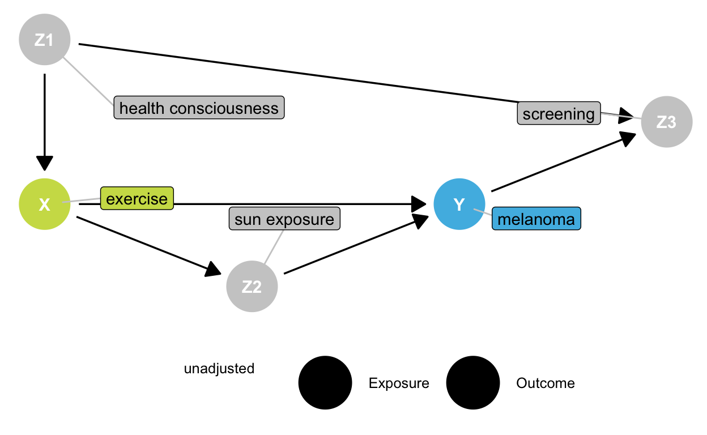
Path
A path between two nodes in a DAG is a route that connects the two nodes, visiting no node more than once. The arrows don’t have to point in the same direction, but if they do the path is considered a causal path.
Below are examples of paths:
- exercise \(\leftarrow\) health consciousness \(\rightarrow\) screening (Not a causal path)
- health consciousness \(\rightarrow\) screening \(\leftarrow\) melanoma (Not a causal path)
Below are examples of causal paths
- exercise \(\rightarrow\) sun exposure \(\rightarrow\) melanoma
- sunexposure \(\rightarrow\) melanoma
Parent
The parents for a given node in a DAG are the set of variables with an arrow pointing directly into that node. For example, a parent of melanoma is sun exposure.
Child
A child of a given node X is any variable with an arrow pointing directly from X. For example, exercise and screening are child nodes of health consciousness.
Descendants and Ancestors
The ancestors of a node are any nodes on the causal path leading to that node. The descendants of a node are any nodes that can be reached by following causal paths.
- The ancestors of sun exposure are exercise and health consciousness
- The descendants of health consciousness are exercise, sun exposure, melanoma and screening
Confounder
A confounder is a common cause of two nodes (usually the common cause of an exposure and an outcome)
- Health consciousness is a confounder of exercise and screening
Mediator
A mediator is a node that lies on the causal path between two other nodes.
- Sun exposure is a mediator on the path between exercise and melanoma
Collider
A collider is a node with two directional arrows pointing towards it.
- Screening is a collider on the path health consciousness \(\rightarrow\) screening \(\leftarrow\) melanoma
Quiz
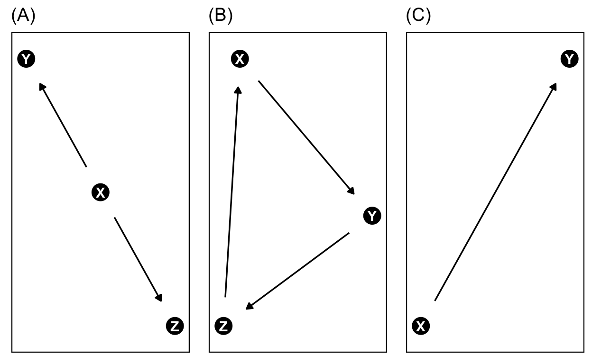
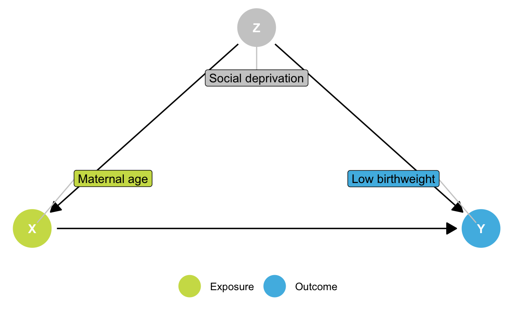
Want more?
Try testing yourself on DAG terminology using this applet on dagitty.net.
Video: Common causal structures
Learn how to represent confounding variables, mediating variables and collider variables on a DAG.
Confounding variables
Definition
Confounding arises when there is a variable Z that influences the exposure of interest X and the outcome of interest Y. We say that the relationship between X and Y is confounded and that Z is the confounder.
Depending on the discipline, a confounder is also referred to as a third variable or a lurking variable.
Example
The relationship between mother’s age at birth (exposure) and child’s birth weight (outcome) may be confounded by mother’s socioeconomic status.
How does this look in a DAG?
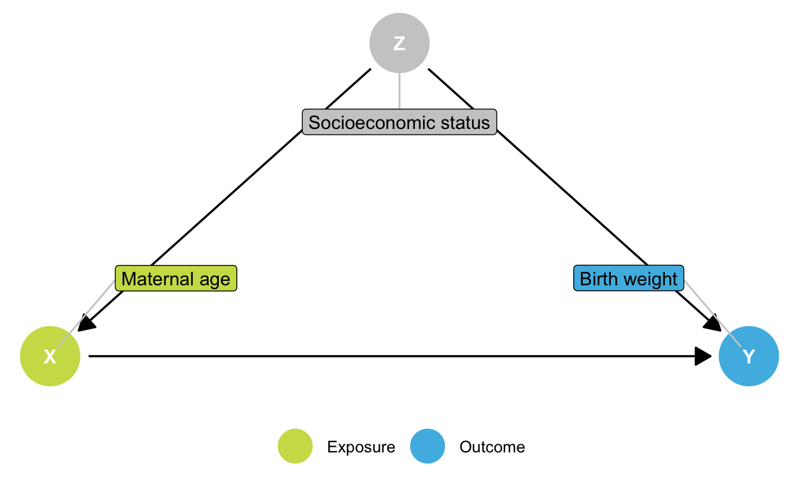
Mediating variables
Definition
A mediating variable is a variable that lies on the causal pathway between an exposure X and outcome Y.
Example
A researcher might hypothesise that quality of sleep is a mediating variable between exercise (exposure) and mood (outcome). We might assume that exercise will improve sleep quality, and a good night’s sleep will in turn improve mood.
How does this look in a DAG?
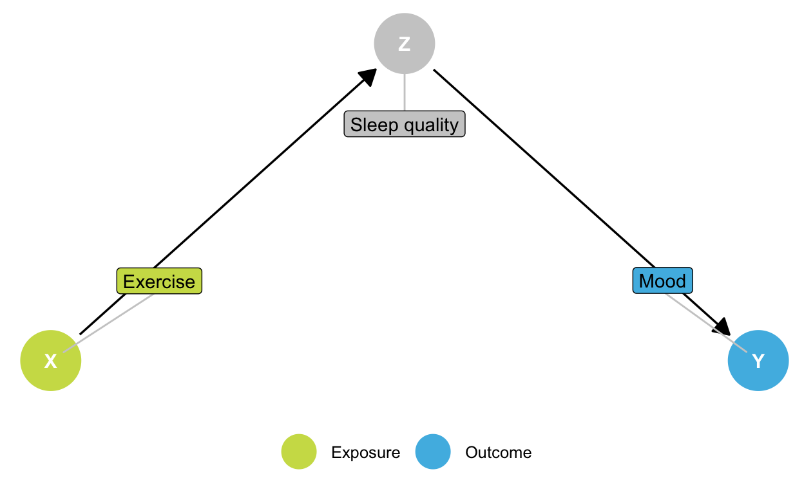
Here there is no connecting arrow going from exercise to mood. Our DAG reflects the assumption that all of the effect of exercise is mediated through quality of sleep. This would be an indirect effect of exercise on mood.
However, we might also hypothesis a direct effect, perhaps caused by the release of endorphins. In that case we would have both an indirect path Exercise → Sleep quality → Mood and a direct path Exercise → Mood.
Muddling mediation
Mediation often gets confused with two closely related epidemiological concepts, interaction and effect modification. Below is a quick summary distinguishing these three terms, adapted from the paper Corraini, Priscila, et al. “Effect modification, interaction and mediation: an overview of theoretical insights for clinical investigators.” Clinical epidemiology 9 (2017): 331
The table below provides a quick summary of these three concepts. If you come across these terms and need a reminder please check out the paper!
| Type of assessment | Aim of the assessment | Example question |
|---|---|---|
| Effect modification | Separate exposure effects according to another variable | Does the new drug have a different effect for men compared to women? |
| Interaction | Evaluate individual and joint effects of exposures | Does drug A work better if the patient is also taking drug B? |
| Mediation | Evaluate direct and indirect effects of exposures | Does exercise improve mood directly, or does exercise improve sleep and then better sleep results in improved mood? |
Collider variables
Definition
A collider is a common effect of two variables.
Example
Suppose a researcher is interested in whether respiratory syncytial virus (RSV) infection during infancy (exposure) causes asthma in early childhood (outcome). In this case, admissions to the Emergency Department (ED) during early childhood would be a potential collider, because both RSV and asthma will increase the probability of ED admission during early childhood.
How does this look in a DAG?
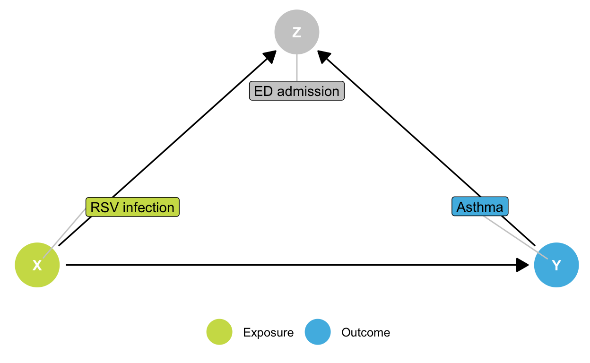
As we will see, identifying colliders is important because controlling for a collider can inadvertently introduce bias. To continue the above example, even though the number of ED admissions during early childhood may be associated with the exposure and outcome but controlling for this variable would actually bias estimates of the relationship between RSV infection and asthma.
Explore this further
You can explore this example and the concept of collider bias further
using this interactive Shiny
app. The app can also be launched by entering
hdat9700tutorials::run('collider-bias') at the console.
D-separation
Now that you know how to represent and recognise different types of relationships in a DAG, how can a DAG help us to choose what variables to include in a causal model? The answer lies in the concept of d-separation.
Definition: Two variables in a DAG are said to be d-separated if there are no open backdoor paths between them.
This definition introduces two new concepts that we also have to define: backdoor paths, and what makes an open or closed path.
1. Backdoor paths
Definition: A backdoor path between X and Y is a path between X and Y that contains an arrow pointing towards Y.
For example, the path ice-cream sales ← sunshine → sunburn is a backdoor path between ice-cream sales and sunburn.
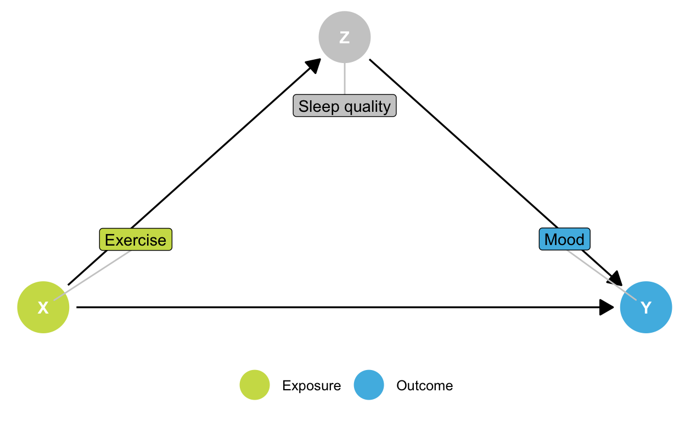
You will recognise this as an example of confounding. In this case, the presence of sunshine induces a correlation or dependence between ice-cream sales and sunburn. The “d” in d-connected stands for dependence!
1b. Frontdoor paths
While we are at it, lets also define frontdoor paths. These are any paths that start with an arrow pointing from the exposure and ending at the outcome. The causal effect of interest \(\text{X} \rightarrow \text{Y}\) is one frontdoor path, but if mediators are present there will be more than one front door path. In the mediation example you saw earlier, both pathways are frontdoor paths because they start with an arrow pointing from the exposure (Exercise) and end up at the outcome (Mood).
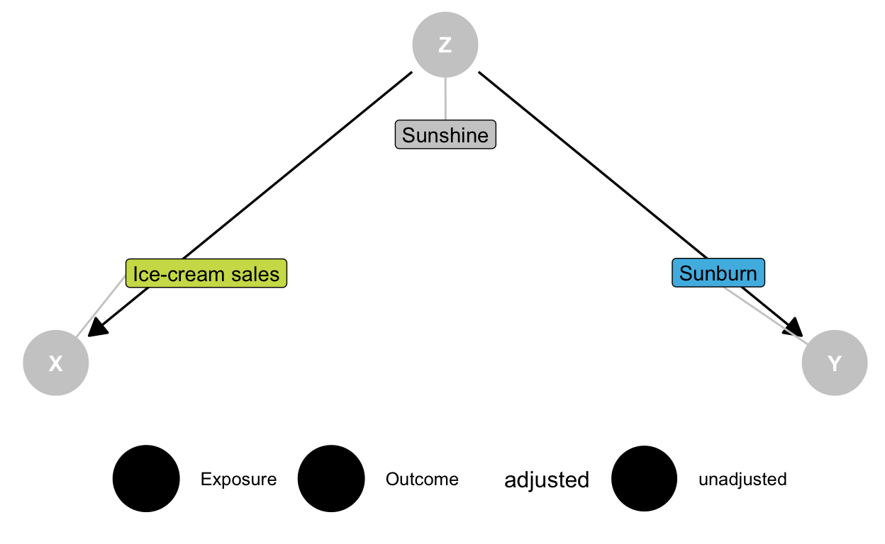
Both paths are front door paths:
Exercise → Sleep quality → Mood
Exercise → Mood
2. Open paths
A path between two nodes X and Y is open if the path carries information or dependence between X and Y. We can open or close a path between two nodes by controlling for intermediate variables. In most contexts, conditioning will mean stratifying by a variable or adding the variable to a regression model.
Importantly, however, whether or not controlling for an intermediate variable Z opens the the pathway or closes the pathway depends on the role of Z. The table below outlines what happens in three different scenarios.
| DAG | Role of Z | Status before controlling for Z | Effect of controlling for Z |
|---|---|---|---|
| Mediator | Path between X and Y is OPEN | CLOSES path between X and Y. | |
| Confounder | Path between X and Y is OPEN | CLOSES path between X and Y | |
| Collider | Path between X and Y is CLOSED | OPENS path between X and Y |
Note that conditioning on a mediator or a confounder will CLOSE the path between X and Y. In the case of colliders, the path is closed unless we condition on Z in which case we OPEN the path between X and Y.
How does this all help?
Having read through the section above, you should be comfortable with the idea of:
- A backdoor path (and a front door path)
- An open or closed path
To estimate the TOTAL effect of X on Y you need to control for a set of variables that can close any backdoor paths, but do not close the frontdoor paths.
To estimate the DIRECT effect of X on Y you need to control for a set of variables that close any backdoor paths and close any frontdoor paths (except the path \(\text{X} \rightarrow \text{Y}\)).
Recap
Worked example
In this section we will use the principle of d-separation and backdoor paths to identify a minimal set of adjustment variables that will allow us to estimate the effect of Exercise on Mood based on the following DAG.
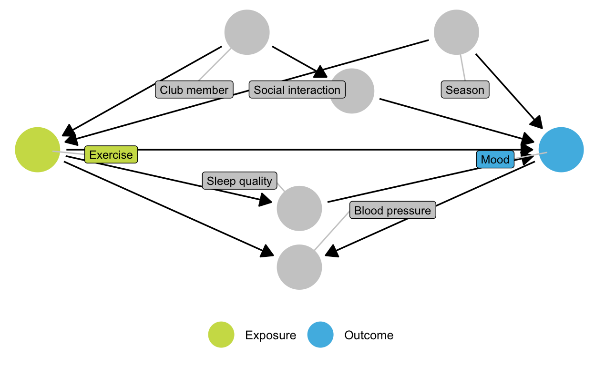
This DAG represents several plausible assumptions:
- Exercise has a direct effect on mood but also an indirect effect via sleep quality
- Exercise also has an effect on blood pressure
- Being a club member has an effect on exercise
- The season also has an effect on exercise (perhaps people exercise less during cold weather)
- Being a club member has an effect on social interactions
- Social interactions have an effect on mood (hopefully a positive one!)
- Season has an effect on mood (sunlight can have a positive effect on mood)
- Mood has an effect on blood pressure (perhaps being calmer and happier decreases stress-induced high blood pressure)
Identifying backdoor paths
In order to estimate the total effect of exercise on mood we need to close all the available backdoor paths. If we are interested in the direct effect of mood on exercise we additionally need to close any frontdoor paths, other than the main causal pathway Exercise → Mood. So let’s start by identifying all of the backdoor and frontdoor paths between Exercise and Mood.
Backdoor paths
To identify backdoor paths, look for paths between the exposure and outcome that have one or more arrows pointing toward the exposure. In total there are three backdoor paths
- Exercise ← Club member → Social interactions → Mood
- Exercise ← Season → Mood
- Exercise → Blood pressure ← Mood
Frontdoor paths
To identify frontdoor paths, look for paths between the exposure and outcome where all arrows point towards the outcome. There are two frontdoor paths are:
- Exercise → Mood
- Exercise → Sleep quality → Mood
Identifying adjustment sets
Total effect
To estimate the total effect of Exercise on Mood we must close all of the backdoor paths. To close a path it is sufficient to control for any single variable along that path.
To close the path Exercise ← Club member → Social interactions → Mood we could control for Club membership OR we could control for number of social interactions. Note that controlling for either variable is sufficient to close the path. We could also control for both variables; this isn’t necessary to close the path, but it won’t do any harm.
To close the path Exercise ← Season → Mood we would need to control for Season.
The path Exercise → Sleep quality ← Mood is already closed (because Sleep quality is a collider on this path) so we don’t have to worry about this.
Thus, there are two possible minimal adjustment sets to identify the total effect of Exercise on Mood:
- Club membership and Season
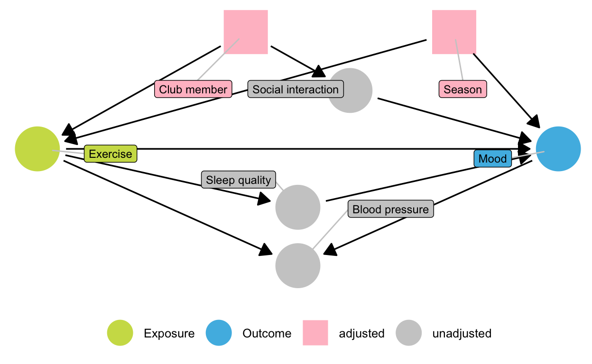
- Number of Social interactions and Season
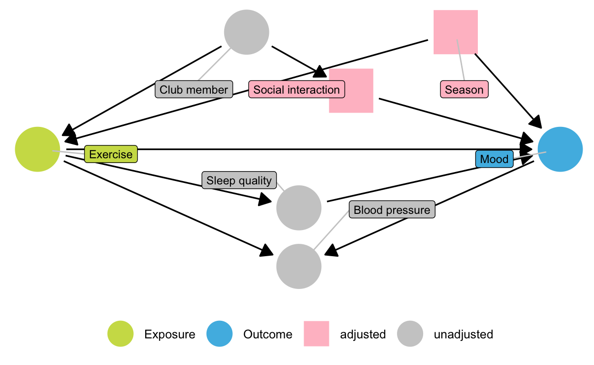
Direct effect
To estimate the direct effect of Exercise on Food we must also consider alternative frontdoor paths other than the path of interest.
We identified two front door paths. The first was the path Exercise → Mood. This is the causal path of interest so we don’t have to do anything here (obviously we will include our exposure and outcome in the model).
The second frontdoor path was Exercise → Sleep quality → Mood. This path implies that part of the effect of exercise is mediated through sleep quality. In order to estimate the direct effect of exercise we must close this pathway, i.e. control for sleep quality in our analysis.
Thus, there are two possible minimal adjustment sets to identify the direct effect of Exercise on Mood:
- Club membership, Season and Sleep quality
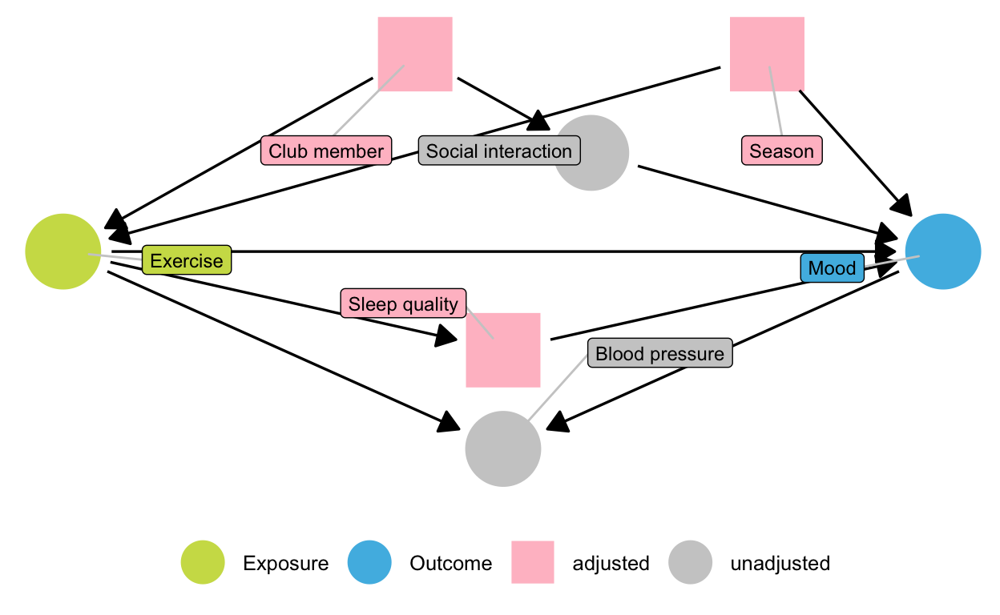
- Number of Social interactions, Season and Sleep quality
Now try the exercise to practice this yourself!
Activities
Activity 1. Test your understanding of d-separation and closing backdoor paths
Explore the concept of d-separation and backdoor paths adjustment
further using this interactive Shiny app. The
app can also be launched by entering
hdat9700tutorials::run('backdoor-paths') at the
console.
This app will generate a random DAG and you must identify which variables to control for in order to estimate causal effect of the exposure on the outcome. You can vary the DAG complexity, and choose to focus on the total effect or the direct effect (you should have a go using both modes).
Activity 2. Explore how understanding causal structures is key to madel specification
Explore how the assumptions about causal structures can guide our
model specification using this interactive Shiny app. The
app can also be launched by entering
hdat9700tutorials::run('dags-1') at the console.
This app generates data for three variables: aspirin use (the exposure), pulmonary embolism (the outcome) and high-blood pressure ( a covariate) under two data generation mechanisms. Scenario A emulates having collected these three variables from a randomised control trial; Scenario emulates having collected these three variables from observational data. You will see that although the available variables are the same in these two scenarios, the correct DAGs and model specifications are different.
Selection Biases
Many different types of biases arise from mechanisms that result in some individuals being recorded in our data and available for analysis, while data other individuals is unavailable. These biases are referred to as Selection Biases.
In this section we will take a closer look at one type of selection bias - nonresponse bias - and see how this can be represented as a type of collider bias.
Survey nonresponse bias
Suppose a researcher was interested in estimating the effect of wearing a face mask (X) on the risk on contracting COVID-19 (Y) during the pandemic using data from a random-digit-dialling telephone survey. Survey respondents were asked whether they had been wearing a face mask in public during the last month and if they had tested positive for the coronavirus. Of course, there are numerous factors that we would need to include in our DAG to address this research question, including the number and type of contacts, individual characteristics like age, sex and smoking status, and the quality and correct use of masks. For the this example, we will zoom in on one aspect: survey participation.
There is a large literature documenting the many ways that survey respondents (those who agreed to participate in a survey) differ from survey nonrespondents (those who decline to participate or can’t even be contacted). Like any survey we can assume this telephone survey suffered from a degree of nonresponse - not every sampled phone number provided a response. In this context, we could imagine that survey respondents are more likely to wear masks, a correlation arising as a result of a latent variable: compliant personality type. Compliant people may be more likely to wear masks and more likely to agree to a survey request, resulting in an association (although not a causal relationship) between mask wearing and survey participation.
We can also imagine that individuals with a recent coronavirus diagnosis may be more likely to participated in a telephone COVID-19 survey, perhaps because they have a personal interest in the topic, or they are easier to contact because they are self-isolating at home.
These assumptions about the key exposure, outcome and participation status could be represented with the DAG below.
When we estimated the effect of mask wearing on COVID-19 using data from participants only, we are effectively controlling for participation status. To see this, consider the hypothetical scenario where data is available for participants and non-participants alike. In this case, stratifying on participation status and performing the analysis among survey respondents only is the same as only having data for survey respondents in the first place.
Looking at the DAG above, it should be clear that survey participation is a collider on the path Mask → Compliant → Participation ← COVID-19. And what happens when we condition on a collider? As you have learned in the section on Collider Variables, controlling for response status will open the triplet Compliant → Participation ← COVID-19. In addition, assuming compliant personality type is a latent, unobserved variable, we will be unable to control for this variable. Thus there will be an open backdoor pathway between the exposure and outcome.
Under this set of assumptions, our exposure and outcome would not be d-separated and our estimated causal effect of mask-wearing on the risk of contracting COVID-19 would likely be biased.
M-Bias
M-bias is a common structure of bias that arises when collider bias is transmitted between ancestors of the exposure and outcome. When presented as a DAG, this structure results in an M shape as shown:
It should be clear by now that adjusting for m would open a backdoor path between a and y in this DAG, as below:
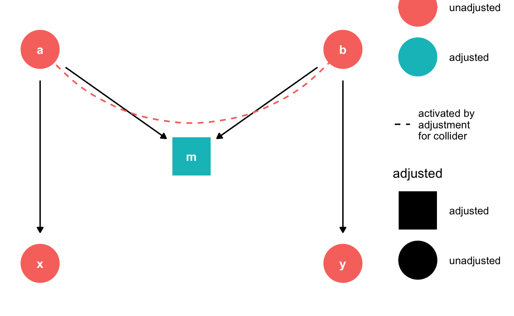
M-bias emphasises a key point of this lecture: just because a variable is available and correlated with the exposure and outcome, doesn’t necessarily mean we should adjust for that variable in a causal model. This is still true even for variables that are “pre-treatment” variables, as is the case in M-bias.
Example
Below is a plausible example of M-bias presented by (Liu et al, 2020)[https://doi.org/10.1093/aje/kws165] where the exposure us SSRI use (SSRI = selective serotonin reuptake inhibitor, a common antidepressant).
If this DAG were a reasonable representation of the data generation mechanism, coronary artery disease would be associated with SSRI Use and Lung cancer in an observational dataset. However, adjusting for coronary artery disease would suggest an apparent effect of SSRI use on Lung cancer, even if one didn’t exist.

Exercise
For this exercise, you need to read through a second tweetorial from Dr Ellie Murray) (@EpiEllie), then answer the question below. This tweetorial focuses on “applying conclusions about causation to results obtained via methods designed only for finding correlations” and illustrates a real-world scenario where M-bias was potentially contributing to counter-intuitive (or misunderstood) results in a study of COVID-19 hospital deaths. Find it here.
Once you have read through the tweetorial, consider the following question.
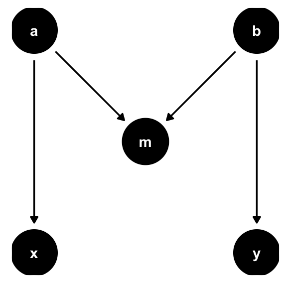
You can use the code below to help visualise different possible answers, or to just take a sneak peek at the syntax for coding DAGs in R.
# Choices: COVID-19 death, Social determinants of health; Smoking history; Heart disease; Current smoking
ggdag_m_bias(x="Hmm",
y = "Not sure",
a = "Could be",
b = "Maybe",
m = "Mehnunuh",
use_labels = "label",
label_col = "black") +
theme_dag()Extra: Coding DAGs in R
DAGitty
DAGitty is an online tool
that allows you to easily create DAGs in a point-and-click fashion,
without any coding required. Conveniently, DAGitty also automatically
creates R code that will allow you to recreate the DAG you draw in
DAGitty within R. In this section, you will see an example of how to
copy the model code from DAGitty into an R environment for further
manipulation with the dagitty and ggdag R
packages.
Below is a mirror to the DAGitty interface . Note that if you are reading this tutorial in the RStudio viewer pane you will need to show it in a browser window to view it properly. Alternatively, you can just go to dagitty.net/dags.html.
You can read the How to… section if you would like to learn how to creat your own DAG. In order to reproduce the DAG you create in R, scroll down to the box titled Model code. Copy this syntax to your clipboard and paste it between the single quotes as indicated in the interactive chunk below.
# Load libraries
library(dagitty)
library(ggdag)
# Copy-paste model code from DAGitty online tool
modelCode <- 'paste the DAGitty model code here'
# Use dagitty to create a dagitty graph object from the model code
dagittyObject <- dagitty::dagitty(modelCode)
# Pass the dagitty object to ggdag
ggdag(dagittyObject)
# Add '+ theme_dag()' to the above code. What changes?
# Try passing the model object to ggdag_status() instead of ggdag(). What's different?Coding DAGS in R
The DAGs in this tutorial are created using the ggdag
package. If you are interested in learning more about how to draw DAGs
in this way, check out the vignette on the package here.
DAGs for common structures
The ggdag package includes a set of convenience
functions to quickly create DAGs with common bias structures. You can
explore these below.
Confounding
ggdag_confounder_triangle(x="icecream sales", y="sunburn", z="sunshine",
use_labels = "label",
label_col = "black") +
theme_dag()Mediation
ggdag_mediation_triangle(x="Exercise", y="Mood", m="Sleep quality",
use_labels = "label",
label_col = "black") +
theme_dag()Collider
ggdag_collider_triangle(x="RSV infection", y="Asthma", m="ED admission",
use_labels = "label",
label_col = "black") +
theme_dag()Building up the elements of a DAG
For more complex DAGs, or mode control over colour and placement, it
might be necessary to use the bespoke geom_dag_* functions
that come with ggdag to tailor the elements of your desired
DAG. Click through the slides below to see an example of this in
action.
Note that:
- By default, the position of nodes is random. You can specify fixed
node positions using
coords =. - The function
dagify()is used to define the relationships between nodes. E.g.y ~ xindicates that an arrow will point from x to y.
- Passing the output of
dagify()tonode_parents(x)creates a dataframe distinguishing between child and parent nodes of x. geom_dag_point()andgeom_dag_edges()plot the results.- Applying
theme_dag()provides a nice clean plot.
Try it yourself
Try experimenting with the code below to create your own DAG.
# specifying fixed coordinates means that the nodes of the DAG will
# always be in the same in the same place. If we don't include this,
# the nodes will be randomly arranged each time the DAG is drawn
coords <- list(
x = c(x = 0, y = 1, a = 1, b = 0),
y = c(x = 0, y = 1, a = 0, b = 1)
)
dagify(y ~ x + a + b,
x ~ a + b,
exposure = "x",
outcome = "y",
coords = coords) %>%
node_parents("x") %>%
ggplot(aes(x=x, y=y, xend=xend, yend=yend, color=parent)) +
geom_dag_point() +
geom_dag_edges() +
geom_dag_text(col = "white", size = 6) +
geom_dag_edges_link(arrow = grid::arrow()) +
theme_dag() +
scale_color_hue(
breaks = c("parent", "child")
) You might notice that this code differs slightly from the code in the
flipbook slides above. The flipbook code uses slow ggplot as
described by the flipbookr package developer Evangeline
Reynolds in her blog.
Slow ggplot is an approach to writing ggplot code that focuses on
incremental changes, for example, instead of specifying
aes(x=xy, y=y, xend=xend, yend=yend, color=parent) in a
single line, slow ggplot separates out each aesthetic element to a
separate line, to emphasise how that element affects the graph. The
editable code above dispenses with the slow ggplot syntax, and is more
typical of how you will write R code in the wild.
Summary
DAGs are a useful tool that allow us to formalise our assumptions about causal mechanisms under study. Dong so has many advantages:
- Express expert knowledge explicitly
- Facilitate discussions about variable selection with co-authors
- Communicate your assumptions to readers
D-separation
In order to estimated the causal path between an exposure X and an outcome Y, the nodes X and Y should be d-separated. This means that there should be no open backdoor paths between X and Y.
- To close a confounding path (\(X \leftarrow C \rightarrow Y\)) or a mediating path (\(X \rightarrow M \rightarrow Y\)) we can condition on the confounder C or mediator M.
- Conversely, conditioning on a collider (\(X \rightarrow C \leftarrow Y\)) will open the pathway
Limitations
Causal inference is hard. DAGs can help, but they are no silver bullet. First of all, DAGs that truly represent causal mechanisms of interest are likely to be much more complicated that the simple scenarios presented in this chapter. Check out the posited DAG below, presented in the study Risk factors for unsuccessful dog ownership: An epidemiologic study in Taiwan by Weng et al 2006. Woof.

It should be clear that any useful DAG needs to be informed by knowledge and understanding about the mechanism at hand. Consulting with experts is essential when developing a DAG…

DAGs are also limited in terms of what they can represent. For example:
DAGs don’t contain information about the magnitude or direction of association between nodes. If an arrow points from X to Y we don’t know if this is a strong negative effect or a weak positive one. In some contexts, the edges of a DAG are annotated with a number to indicate the magnitude and direction of the implied effect.
It is not simple to represent statistical interaction or effect modification in a DAG.
A DAG does not show if a cause only applies to some individuals
Despite some limitations, DAGs are a powerful tool. Next time you are faced with a research question ask yourself, is this a casual question? If the answer is yes, before looking at any data see if you can draw the main elements of a DAG. To quote Miguel Hernán:
Draw your assumptions before your conclusions